소음진동기사(구) (2018-04-28 기출문제)
1과목: 소음진동개론
1. 가로 7m, 세로 3.5m의 벽면 밖에서 음압레벨이 112dB이라면 15m 떨어진 곳은 몇 dB인가? (단, 면음원 기준)
- 76.4dB
- 85.8dB
- 88.9dB
- 92.8dB
(정답률: 57%)

2. 음이 전달되는 매질의 밀도 p, 미소체적 δu, 입자속도 μ, 영률 E라고 할 때 음의 운동에너지의 표현식으로 옳은 것은?
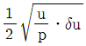
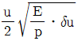
- 1/2ㆍE/pㆍuㆍδu
- 1/2ㆍpㆍδuㆍu2
(정답률: 60%)
3. 기계의 진동으로 인해 발생하는 피해와 가장 거리가 먼 것은?
- 구조물의 진동에 의한 구조물 표면에서의 소음 방사
- 인체 피로감 가중
- 차량 배기 토출음에 의한 피해
- 기계의 수명 단축
(정답률: 70%)
4. 진동가속도의 실효치가 10-3m/s2라면, 진동가속도레벨은 얼마인가?
- 80dB
- 60dB
- 40dB
- 20dB
(정답률: 77%)
5. 기온이 22℃, 평균음 에너지 밀도가 4.4×10-7J/m3일 때 음압실효치는?
- 0.1N/m2
- 0.15N/m2
- 0.2N/m2
- 0.25N/m2
(정답률: 65%)
6. 다음 중 기류음으로 가장 거리가 먼 것은?
- 엔진의 배기음
- 압축기의 배기음
- 베어링 마찰음
- 관의 굴착부 발생음
(정답률: 77%)
7. 인간의 귀 중 내이(內耳)의 구성요소만으로 나열된 것은?
- 원형창, 청신경, 난원창, 인두
- 나원창, 이관, 이소골, 외이도
- 고막, 이소골, 나원창, 이관
- 인두, 고막, 난원창, 청신경
(정답률: 60%)
8. 기상조건에서 공기흡음에 의해 일어나는 감쇠치를 가장 올바르게 표현한 식은? (단, f는 옥타브밴드별 중심주파수(Hz), r은 음원과 관측점 사이의 거리(m), ø는 상대습도(%)이며, 바람은 부시하고 20℃를 기준으로 한다.)
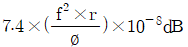
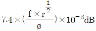
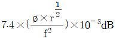
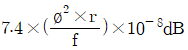
(정답률: 50%)
9. 다음 중 음에 관한 설명으로 옳지 않은 것은?
- 파면은 파동의 위상이 같은 점들을 연결한 면이다.
- 음선은 음의 진행방향으로 나타내는 선으로 파면과 평행하다.
- 평면파는 음파의 파면들이 서로 평행한 파이다.
- 자유 음장에 있는 점음원은 구면파를 발생시킨다.
(정답률: 70%)
10. 감쇠 자유 진동계의 운동방정식이
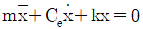
으로 표현된다. 이 진동계의 대수 감쇠율은? (단, m=3kg, Ce=5NㆍS/m, K=30N/m이다.)- 0.3
- 1.7
- 5.0
- 19.0
(정답률: 60%)
11. 일반적으로 공해진동의 대상으로 문제가 되는 진동가속도레벨의 범위로 가장 알맞은 것은?
- 40~50dB
- 60~80dB
- 100~120dB
- 150~180dB
(정답률: 59%)
12. 다음 중 흡음감쇠가 가장 큰 경우는?
- 주파수(Hz):4,000, 기온(℃):-10, 상대습도(%):50
- 주파수(Hz):2,000, 기온(℃):0, 상대습도(%):50
- 주파수(Hz):1,000, 기온(℃):-10, 상대습도(%):70
- 주파수(Hz):500, 기온(℃):10, 상대습도(%):85
(정답률: 79%)
13. 아래 그림과 같은 진동계에서 각각의 고유진동수로 옳은 것은? (단, S는 스프링 전수, M은 질량)
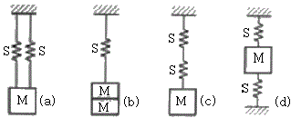
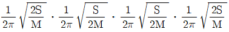
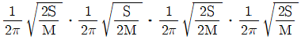
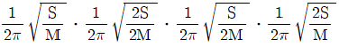
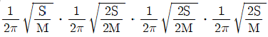
(정답률: 70%)
14. 50phon의 소리가 발생한다면 몇 sone의 크기로 들리는가?
- 2sones
- 4sones
- 6sones
- 8sones
(정답률: 75%)
15. 우리가 소리를 듣기까지의 귀의 구성요소별(외이-중이-내이) 전달 매질로 옳은 것은?
- 기체-액체-액체
- 기체-고체-액체
- 기체-고체-고체
- 기체-액체-구체
(정답률: 78%)
16. 어느 실내 공간이 직육면체로 이루어져 있으며, 가로 10m, 세로 20m. 높이 5m일 때 평균자유행로는?
- 2.17m
- 3.71m
- 4.17m
- 5.71m
(정답률: 67%)
17. 그림과 같은 응답곡선에서 감쇠비는 약 얼마인가?
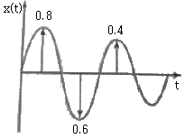
- 0.008
- 0.017
- 0.087
- 0.110
(정답률: 62%)
18. 레이노씨 현상(Raynaud's phenomenon)으로 가장 거리가 먼 것은?
- White finger 증상이라고도 한다.
- 더위에 폭로되면 이러한 현상은 더욱 악화된다.
- 착암기, 공기해머 등을 많이 사용하는 작업자의 손에서 유발될 수 있는 현상이다.
- 말소혈관운동의 저하로 인한 혈액순환의 장애이다.
(정답률: 70%)
19. 음향출력 50W의 점음원으로분터 구형파가 전파될 때 이 음원으로부터 8m 지점의 음세기 레벨은?
- 108dB
- 111dB
- 120dB
- 123dB
(정답률: 65%)
20. 다음 설명하는 청감보정의 특성은?
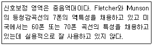
- B특성
- C특성
- D특성
- H특성
(정답률: 67%)
2과목: 소음방지기술
21. 단일 벽체의 차음 측성에 대한 설명으로 옳지 않은 것은?
- 단일 벽체의 차음 특성은 주파수에 따라 세 영역으로 구분한다.
- 질량법칙이 성립되는 영역에서는 투과손실이 옥타브당 3dB씩 증가한다.
- 일치효과 영역에서는 투과손실이 현저히 감소한다.
- 벽체의 공진 영역에서는 차음 성능이 저하된다.
(정답률: 83%)
22. 동일한 재로(면밀도가 1kg/m2) 두 개의 벽 사이에 10cm의 공간을 두었다. 공명투과가 나타나서 처음성능이 단일벽에 비하여 떨어지게 되는 저음역의 공명주파수대역(Hz)은 약 얼마인가? (단, 공기의 음속은 343m/s, 공기의 밀도는 1.2kg/m3임)
- 33
- 67
- 134
- 268
(정답률: 72%)
23. 다음 중 방음벽에 의한 소음감쇠량의 대부분을 차지하는 것은?
- 방음벽의 높이에 의해 결정되는 회절감쇠
- 방음벽의 재질에 의해 결정되는 투과감쇠
- 방음벽의 두께에 의해 결정되는 반사감쇠
- 방음벽의 길이에 의해 결정되는 간섭감쇠
(정답률: 59%)
24. 팽창형 소음기에 관한 설명으로 가장 적합한 것은?
- 전파경로상에 두 음의 간섭에 의해 소음을 저감시키는 원리를 이용한다.
- 고주파 대역에서 감음효과가 뛰어나다
- 단면 불연속의 음에너지 반사에 의해 감음된다.
- 감음주파수는 팽창부 단면적비에 의해 결정된다.
(정답률: 43%)
25. A시료의 흡음성능 측정을 위해 정재파관내법을 사용하였다. 1kHz에서 산정된 흡음률이 0.933이었다면 1kHz 순음인 사인파의 정재파비는?
- 1.1
- 1.7
- 2.1
- 2.6
(정답률: 58%)
26. 소음제어를 위한 자재류의 특성에 대한 설명으로 가장 거리가 먼 것은?
- 흡음재:잔향음의 에너지 저감에 사용된다.
- 차음재:음에너지를 열에너지로 변환시킨다.
- 제진재:진동으로 판넬이 떨려 발생하는 음에너지의 저감에 사용된다.
- 차진재:구조적 진동과 진동전달력을 저감시킨다.
(정답률: 55%)
27. 흡음 덕프형 소음기에서 최대 감음 주파수의 범위로 가장 적합한 것은? (단, λ:대상음의 파장(m), D:덕트의 내경(m))
- λ/2＜D＜λ
- λ＜D＜2λ
- 2λ＜D＜4λ
- 4λ＜D＜8λ
(정답률: 80%)
28. 다음 중 소음대책 순서로 가장 먼저 실시하여야 할 것은?
- 수음점에서의 규제기준 확인
- 문제 주파수의 발생원 탐사
- 소음이 문제되는 지점(수음점)의 위치 확인
- 어느 주파수 대역을 얼마만큼 저감시킬 것인가를 파악
(정답률: 70%)
29. 벽면 또는 벽 상단의 음향특성에 따라 일반적으로 분류한 방음벽의 종류에 해당하지 않은 것은?
- 확장형
- 공명형
- 간섭형
- 흡음형
(정답률: 70%)
30. 반무한 방음벽의 회절감쇠치는 15dB, 투과손실치는 20dB일 때, 이 방음벽에 의한 삽입 손실치는? (단, 음원과 수음점이 지상으로부터 약간 높은 위치에 있다.)
- 11.5dB
- 13.8dB
- 15.0dB
- 20.0dB
(정답률: 63%)
31. 10m(L)×10m(W)×4m(H)인 방이 있다. 벽과 천장, 바닥이 모드 흠음률 0.02인 콘크리트로 되어 있고 실내 중앙바닥에서 PWL 90dB인 소형 기계가 가동될 때, 이 기계로부터 3m 떨어진 실내 한 점에서의 음압레벨은? (단, 기계의 크기는 무시한다.)
- 87.5dB
- 93.5dB
- 96.5dB
- 101.5dB
(정답률: 59%)
32. 다음 중 기류음 저감대책으로 가장 거리가 먼 것은?
- 관의 곡류 완화
- 분출유속의 저감
- 공명 방지
- 밸브의 다단화
(정답률: 62%)
33. 원형 흡음소음기를 사용해 500Hz의 소음을 10dB 저감시키고자 한다. 소음기의 내부지름이 1m, 길이가 5m일 때, 흡음재의 흡음률은 얼마여야 하는가? (단, K=ax-0.1)
- 0.25
- 0.4
- 0.6
- 0.95
(정답률: 34%)
34. 팽창형 소음기의 팽창부와 입구의 직경이 각각 0.4m, 1m일 때 이 소음기의 최대투과손실은 약 얼마인가?
- 35dB
- 25dB
- 10dB
- 1dB
(정답률: 75%)
35. 다공질형 흡음재를 페인트로 도장하면 흡음특성이 어떻게 바뀌는가?
- 소음역의 흡읍률이 상승한다.
- 고음역의 흡음률이 저하된다.
- 흡음률에 변화가 없다.
- 저음역 및 고음역의 흡음률이 상승한다.
(정답률: 알수없음)
36. 다음은 소음방지대책에 관한 설명이다. ()에 가장 적합한 것은?
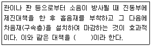
- 방진
- 흡음
- 차음
- 래깅
(정답률: 67%)
37. 음파가 벽면에 수직입사할 때 단일벽의 투과손실을 구하는 실용식은? (단, m은 벽체의 면밀도(kg/m2), f는 입사주파수(Hz)이다.)
- 18log(mㆍf)+44 dB
- 18log(mㆍf)-44 dB
- 20log(mㆍf)+43 dB
- 20log(mㆍf)-43 dB
(정답률: 67%)
38. 실내소음을 저감시키기 위해 glass wool을 내벽에 부착하고자 한다. 경제적이고 효율적인 감음효과를 얻기 위한 glass wool의 부착위치로 가장 적합한 것은? (단, 입사음의 파장은 λ라 한다.)
- 벽면에 바로 부착한다.
- 벽면에서 λ만큼 떨어진 위치에 부착한다.
- 벽면에서 λ/2만큼 떨어진 위치에 부착한다.
- 벽면에서 λ/4만큼 떨어진 위치에 부착한다.
(정답률: 69%)
39. 정상청력을 가진 사람이 1,000Hz에서 기청할 수 있는 최소음압실효치가 2×10-5N/m2일 때, 어떤 대상 음압레벨이 126dB이었다면 이 대상 음의 음압실효치(N/m2)는?
- 약 20N/m2
- 약 40N/m2
- 약 60N/m2
- 약 100N/m2
(정답률: 60%)
40. 부피가 2,500m3이고, 내부 표면적이 1,250m2인 공장의 평균흡음률이 0.25일 때 음파의 평균자행로는?
- 7.1m
- 8.0m
- 8.9m
- 10.6m
(정답률: 42%)
3과목: 소음진동 공정시험 기준
41. 규제기준 중 생활진동 측정방법에서 측정조건으로 거리가 먼 것은?
- 진동픽업(pick-up)의 설치장소는 옥내 지표를 원칙으로 하고 복잡한 반사, 회절현상이 예상되는 지점은 피한다.
- 진동픽업의 설치장소는 완충물이 없고, 충분히 다져서 단단히 굳은 장소로 한다.
- 진동픽업은 수직방향 진동레벨을 측정할 수 있도록 설치한다.
- 진동픽업의 설치장소는 경사 또는 요철이 없는 장소로 하고, 수평면을 충분히 확보할 수 있는 장소로 한다.
(정답률: 70%)
42. 소음계의 성능기준 중 지시계기의 눈금 오차는 몇 dB 이내로 규정하고 있는가?
- 0.5dB 이내
- 1dB 이내
- 3dB 이내
- 10dB 이내
(정답률: 50%)
43. 다음은 도로교통진동관리의 측정시간 및 측정지검수 기준이다. ()안에 알맞은 것은?
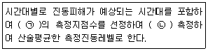
- ㉠ 2개 이상, ㉡ 4시간 이상 간격으로 2회 이상
- ㉠ 2개 이상, ㉡ 2시간 이상 간격으로 2회 이상
- ㉠ 1개 이상, ㉡ 4시간 이상 간격으로 2회 이상
- ㉠ 1개 이상, ㉡ 2시간 이상 간격으로 2회 이상
(정답률: 65%)
44. 압전형 진동픽업의 특징에 관한 설명으로 옳지 않은 것은? (단, 동전형 진동픽업과 비교)
- 온도, 습도 등 환경조건의 영향을 받는다.
- 소형 경량이며, 중고주파수대역(10kHz 이하)의 가속도 측정에 적합하다.
- 고유진동수가 낮고(보통 10~20Hz), 감도가 안정적이다.
- 픽업의 출력임피던스가 크다.
(정답률: 58%)
45. 철도소음관리기준 측정방법에 관한 사항으로 거리가 먼 것은?
- 옥외측정을 원칙으로 하며, 그 지역의 철도소음을 대표할 수 있는 장소나 철도소음으로 인하여 문제를 일으킬 우려가 있는 장소로서 지면 위 0.3~0.5m 높이로 한다.
- 요일별로 소음반응이 적은 평일(월요일부터 금요일까지)에 당해지역의 철도소음을 측정한다.
- 측정소음도는 기상조건, 열차운행횟수 등을 고려하여 당해 지역의 1시간 평균 철도 통행량 이상인 시간대를 포함하여 주간 시간대는 2시간 간격을 두고 1시간씩 2회 측정하여 산술평균한다.
- 배경소음도는 철도운행이 없는 상태에서 측정소음도의 측정점과 동일한 장소에서 5분이상 측정한다.
(정답률: 60%)
46. 어떤 단조기의 대상진동레벨이 62dB(V)이다. 이 기계를 공장 내에서 가동하면서 측정한 진동레벨이 65dB(V)라 할 때 이 공장의 배경진동레벨은?
- 60dB(V)
- 61dB(V)
- 62dB(V)
- 63dB(V)
(정답률: 75%)
47. 소음계의 부속장치인 표준음 발생기에 관한 설명으로 옳지 않은 것은?
- 소음계의 측정감도를 교정하는 기기이다.
- 발생음의 오차는 ±0.1dB 이내이어야 한다.
- 발생음의 오차는 음압도가 표시되어야 한다.
- 발생음의 오차는 주파수가 표시되어야 한다.
(정답률: 77%)
48. 소음측정기기 구성이 순서대로 옳게 배열된 것은?
- 마이크로폰→청감보정회로→지시계기→증폭기
- 마이크로폰→레벨레인지변환기→증폭기→청감보정회로→지시계기
- 레벨레인지변환기→마이크로폰→지시계기→증폭기
- 청감보정회로→증폭기→레벨레인지변환기→지시계기
(정답률: 75%)
49. 동일 건물 내 사업장 소음 규제기준 측정방법 중 측정시간 및 측정 지점수 기준으로 가장 적합한 것은?
- 피해가 예상되는 적절한 측정시각에 2지점 이상의 측정지점수를 선정ㆍ측정하여 등가한 소음도를 측정소음도로 한다.
- 당해지역 소음을 대표할 수 있도록 측정지점 수를 충분히 결정하고, 각 측정지점에서 2시간 이상 간격으로 4회 이상 측정하여 산술평균한 값을 측정소음도로 한다.
- 피해가 예상되는 적절한 측정 시각에 2지점 이상의 측정지점수를 선정하고 각각 2회 이상 측정하여 각 지점에서 산술 평균한 소음도 중 가장 높은 소음도를 측정소음도로 한다.
- 각 시간대 중 최대소음이 예상되는 시각에 1지점 이상의 측정지점수를 택하여야 한다.
(정답률: 알수없음)
50. 소음의 환경기준측정방법 중 측정점 선정에 관한 설명이다. 다음 () 안에 들어갈 말로 옳은 것은?
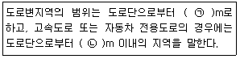
- ㉠ 차선수×15 ㉡ 100
- ㉠ 차선수×10 ㉡ 100
- ㉠ 차선수×15 ㉡ 150
- ㉠ 차선수×10 ㉡ 150
(정답률: 64%)
51. 7일간의 항공기 소음의 일별 WECPNL이 85, 86, 90, 88, 83, 73, 67인 경우 7일간의 평균 WECPNL은?
- 80
- 84
- 86
- 89
(정답률: 60%)
52. 어느 공장의 측정소음도가 88dB(A)이고, 배경소음도가 83dB(A)이었다면 이 공장의 대상소음도는?
- 87.5dB(A)
- 86.3dB(A)
- 85.1dB(A)
- 84.3dB(A)
(정답률: 73%)
53. 규제기준 중 발파진동 측정방법에서 진동평가를 위한 보정에 관한 설명으로 옳지 않은 것은? (단, N은 시간대별 보정발파횟수)
- 대상진동레벨에 시간대별 보정발파횟수에 따른 보정향을 보정하여 평가진동레벨을 구한다.
- 시간대별 보정발파횟수(N)는 작업 일지 및 발파계획서 또는 폭약사용신고서 등을 참조로하여 산정한다.
- 여건상 불가피하게 측정 당일의 발파횟수만큼 측정하지 못한 경우에는 측정 시의 장악량과 같은 양을 사용한 발파는 같은 진동레벨로 판단하여 보정발파횟수를 산정할 수 있다.
- 보정량(+0.1 log N;N＞5)을 보정하여 평가진동레벨을 구한다.
(정답률: 62%)
54. 항공기소음관리기준 측정조건에서 가장 거리가 먼 것은?
- 상시측정용 옥외마이크로폰의 경우 풍속이 5m/sec를 초과할 때에는 측정하여서는 안된다.
- 손으로 소음계를 잡고 측정할 경우 소음계는 측정자의 몸으로부터 0.5m 이상 떨어져야 한다.
- 풍속이 2m/sec 이상으로 측정치에 영향을 줄 우려가 있을 때에는 반드시 마이크로폰에 방풍망을 부착하여야 한다.
- 측정자는 비행경로에 수직하게 위치하여야 한다.
(정답률: 44%)
55. 규제기준 중 발파진동의 측정진동레벨 분석방법으로 가장 거리가 먼 것은?
- 디지털 진동자동분석계를 사용할 때에는 샘플 주기를 0.1초 이하로 놓고 발파진동의 발생기간(수초 이내)동안 측정하여 자동 연산ㆍ기록한 최고치를 측정진동레벨로 한다.
- 진동레벨기록기를 사용하여 측정할 때에는 기록지상 지시치의 최고치를 측정진동레벨로 한다.
- 최고진동 고정(hold)용 진동레벨계를 사용할 때에는 당해 지시치를 측정진동레벨로 한다.
- L10진동레벨을 측정할 수 있는 진동레벨계를 사용할 때에는 10분간 측정하여 진동레벨계에 나타난 L10값을 측정진동레벨로 한다.
(정답률: 58%)
56. 진동레벨계의 성능기준으로 옳지 않은 것은?
- 측정가능 주파수 범위는 1~90Jz 이상이어야 한다.
- 측정가능 진동레벨의 범위는 45~120dB 이상이어야 한다.
- 진동픽업의 횡감도는 규정주파수에서 수감축 감도에 대한 차이가 15dB 이상이어야 한다.(연직특성)
- 레벨레인지 변환기가 있는 기기에 있어서 레벨레인지 변환기의 전환오차가 1dB 이내 이어야 한다.
(정답률: 43%)
57. 다음은 규제기준 중 발파소음 측정방법의 측정시간 및 측정지점수 기준이다. ()안에 가장 적합한 것은?
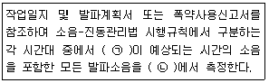
- ㉠ 평균발파소음, ㉡ 1지점 이상
- ㉠ 평균발파소음, ㉡ 5지점 이상
- ㉠ 최대발파소음, ㉡ 1지점 이상
- ㉠ 최대발파소음, ㉡ 5지점 이상
(정답률: 73%)
58. 배출허용기준 중 진동을 디지털 진동자동분석계로 측정하고자 한다. 측정 지점에서의 측정진동레벨로 정하는 기준으로 옳은 것은? (단, 샘플주기를 1초 이내에서 결정하고 5분 이상 측정)
- 자동연산ㆍ기록한 90% 범위의 상단치인 L90 값
- 자동연산ㆍ기록한 90% 범위의 상단치인 L10 값
- 자동연산ㆍ기록한 80% 범위의 상단치인 L80 값
- 자동연산ㆍ기록한 80% 범위의 상단치인 L10 값
(정답률: 54%)
59. 측정진동레벨에 배경진동의 영향을 보정한 후 얻어진 진동레벨을 무엇이라 하는가?
- 대상진동레벨
- 평가진동레벨
- 배경진동레벨
- 정상진동레벨
(정답률: 67%)
60. 항공기소음관리기준 측정의 일반사항 중 소음계의 청감보정회로 및 동특성 측정조건으로 옳은 것은?
- 청감보정회로:A특성, 동특성:빠름모드
- 청감보정회로:A특성, 동특성:느림모드
- 청감보정회로:C특성, 동특성:빠름모드
- 청감보정회로:C특성, 동특성:느림모드
(정답률: 50%)
4과목: 진동방지기술
61. 방진재료에 관한 설명으로 가장 거리가 먼 것은?
- 방진고무는 설계 및 부착이 비교적 간결하고, 금속과도 견고하게 접착할 수 있다.
- 방진고무는 내유성, 내환경성 등에 대해서는 일반적으로 금속스프링보다 떨어지지만, 특히 저온에서는 금속스프링에 비해 유리하다.
- 방진고무 사용 시 내유성을 필요로 할 때는 천연고무보다 합성고무가 좀 더 유리하다.
- 금속스프링의 경우 극단적으로 낮은 스프링 정수로 했을 때 지지장치를 소형, 경량으로 하기가 어렵다.
(정답률: 62%)
62. 기계의 탄성 지지에서 비연성 지지에 관한 설명으로 옳지 않은 것은?
- 지지스프링 축의 방향을 기계의 관성주축에 평행하게 취한다.
- 각 좌표면 XY, YZ, ZX 간 각각의 대칭위치를 취한다.
- 비연성 지지를 생각할 경우에는 기계는 3자 유도의 계로 생각해야 한다.
- 기계가 진동할 때, 그 진동의 원인으로 다른 진동을 유발시키는데, 이러한 현상을 진동의 연성이라고 한다.
(정답률: 50%)
63.
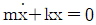
으로 주어지는 비감쇠 자유 진동에서 k/m=16이면 주기T(s)는 얼마인가?- π/2
- π
- 3π/2
- 2π
(정답률: 65%)
64. 물체의 최대가속도가 630cm/s2, 매분 360 사이클의 진동수로 조화운동을 하고 있는 물체 진동의 변위진폭(cm)은?
- 0.88
- 0.66
- 0.44
- 0.22
(정답률: 77%)
65. 그림과 같은 진동계에서 방진대책의 설계범위로 가장 적합한 것은? (단, f는 강제진동수, fn은 고유진동수이며, 이 때 진동전달률은 12.5% 이하가 된다.)
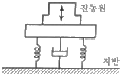
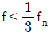
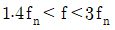
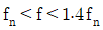
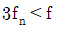
(정답률: 59%)
66. 중량 W=15.5N, 감쇠계수 Ce=0.⑤5Nㆍs/cm, 스프링정수 k=0.468N/cm인 진동계의 감쇠비는?
- 0.21
- 0.24
- 0.32
- 0.39
(정답률: 63%)
67. 무게가 70N인 냉장고 유닛이 600rpm으로 작동하고 있다. 이 때 4개의 같은 스프링으로 병렬로 냉장고 유닛을 지지한다면 전단률이 10%가 되게 하기 위한 스프링 1개당 스프링정수는? (단, 감쇠는 무시)
- 3.2N/cm
- 6.4N/cm
- 9.6N/cm
- 12.8N/cm
(정답률: 39%)
68. 스프링과 질량으로 구성된 진동계에서 스프링의 정적 처짐이 2cm라면 이 계의 주기(s)는?
- 0.14
- 0.28
- 0.36
- 0.52
(정답률: 70%)
69. 부족감쇠(under damping)가 되도록 감쇠재료를 선택했을 때 그 진동계의 감쇠비(ξ)는 다음 중 어느 경우의 값을 갖는가?
- ξ=0
- ξ=1
- ξ＞1
- 0＜ξ＜1
(정답률: 54%)
70. 전기모터가 기계장치를 구동시키고 계는 고무깔개 위에 설치되어 있으며, 고무깔개는 0.4cm의 정격처짐을 나타내고 있다. 고무깔개의 감쇠비(ξ)는 0.22. 진동수비(η)는 3.3이라면 기초에 대한 힘의 전단률은?
- 0.11
- 0.14
- 0.18
- 0.24
(정답률: 31%)
71. 송풍기가 1,200rpm으로 운전되고 있고, 중심 회전축에서 30cm 떨어진 곳에 40g의 질량이 더해져 진동을 유발하고 있다. 이 때 이 송풍기의 정적 불평형 가진력은?
- 약 14N
- 약 115N
- 약 190N
- 약 270N
(정답률: 54%)
72. 진동방지대책 중 발생원 대책으로 거리가 먼 것은?
- 동적흡진
- 가진력 감쇠
- 탄성지지
- 수진점 근방에 방진구를 판다.
(정답률: 59%)
73. 감쇠가 없는 계에서 진폭이 이상할 전도로 크게 나타날 때의 원인은?
- 고유진동수와 강제진동수 간에 아무런 관계가 없다.
- 고유진동수가 강제진동수보다 현저하게 작다.
- 고유진동수가 강제진동수보다 현저하게 크다.
- 고유진동수가 강제진동수가 일치되어 있다.
(정답률: 63%)
74. 계수여진진동(예 : 운전속도의 2배 성분으로 가진하는 경우)에 관한 설명으로 옳지 않은 것은?
- 대표적인 예는 그네로서, 그네가 1행정하는 동안 사람 몸의 자세는 2행정을 하게 된다.
- 가진력의 기초주파수와 계의 고유진동수가 거의 같을 때 공진하는 현상이다.
- 근본적인 대책은 질량 및 스프링 특성의 시간적 변동을 없애는 것이다.
- 회전하는 편평축의 진동, 왕복운동기계의 크랭크축계의 진동도 계수여진진동에 속한다.
(정답률: 60%)
75. 회전기계의 진동을 억제하기 위한 대책으로 가장 거리가 먼 것은?
- 위험속도의 회피운전
- 회전 축의 정렬각 조정
- 베어링 강성의 최적화
- 불평형력을 증대시켜 회전진동을 감쇠
(정답률: 60%)
76. 그림과 같은 무시할 수 없는 스프링 질량이 있는 스프링-질량계에서 고유진동수는 얼마인가? (단, k=48,000N/m, m=3kg, M=119kg)
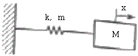
- 2.14Hz
- 3.18Hz
- 5.20Hz
- 9.28Hz
(정답률: 64%)
77. 중량 1,000N인 기계를 탄성지지시켜 32dB의 방진효과를 얻기 위한 진동전달률은?
- 0.025
- 0.⑤
- 0.1
- 0.2
(정답률: 50%)
78. 다음 선택기준을 가진 방진재로 가장 적합한 것은?
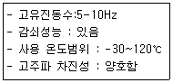
- 코일형 금속스프링형
- 방진고무
- 고무 스프링
- 중판형 금속스프링
(정답률: 65%)
79. 다음 기계류 중 레이노씨 현상(Raynaud's phonomenon)이 가장 쉽게 일어나는 것은?
- 단조기 등 열간에서 사용하는 기계
- 선반 들 중절삭 가공기계
- 버스 등 고속운동기계
- 착암기 등 압축공기를 이용한 기계
(정답률: 70%)
80. 기계에서 발생하는 불평형력은 회전 및 왕복운동에 의한 관성력과 모멘트에 의해 발생한다. 회전운동에 의해서 발생되는 원심력 F의 공식으로 옳은 것은? (단, 불평형 질량은 m, 불평형 질량의 운동반경은 r, 각 진동수는 ω이다.)
- F=mr2ω
- F=F=mrω
- F=m2rω
- F=mrω2
(정답률: 65%)
5과목: 소음진동 관계 법규
81. 소음진동관리법령상 제작차 소음허용기준에서 자동차에서 측정해야 할 소음 종류로 거리가 먼 것은?
- 공력소음
- 가속주행소음
- 배기소음
- 경적소음
(정답률: 67%)
82. 소음진동관리법규상 시ㆍ도지사 등이 배출허용기준 초과 관련하여 개선명령을 하였으나 천재지변 등 기타 부득이한 사정이 있어 개선 기간 내에 조치를 끝내지 못한 자에 대해 신청에 의해 그 기간을 연장할 수 있는 범위기준은?
- 3개월의 범위
- 6개월의 범위
- 9개월의 범위
- 12개월의 범위
(정답률: 70%)
83. 소음진동관리법령상 배출시설의 설치신고 또는 설치허가 대상에서 제외되는 지역에 해당하지 않는 것은? (단, 시ㆍ도지사가 환경부장관의 승인을 받아 지정ㆍ고시한 지역은 제외)
- 산업입지 및 개발에 관한 법률 규정에 따른 산업단지
- 국토의 계획 및 이용에 관한 법률 시행령에 따른 관리지역
- 자유무역지역의 지정 및 운영에 관한 법률규정에 따라 지정된 자유무역지역
- 국토의 계획 및 이용에 관한 법률 시행령 규정에 따라 지정된 전용공업지역
(정답률: 55%)
84. 다음은 소음진동관리법규상 공사장 방음시설 설치기준이다. ()안에 알맞은 것은?
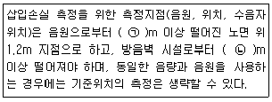
- ㉠ 3, ㉡ 1.5
- ㉠ 3, ㉡ 2
- ㉠ 5, ㉡ 1.5
- ㉠ 5, ㉡ 2
(정답률: 31%)
85. 다음은 소음진동관리법상 운행차의 개선명령에 관한 사항이다. () 안에 가장 적합한 것은?
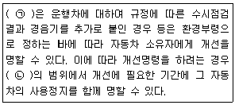
- ㉠ 특별시장ㆍ광역시장ㆍ특별자치시장ㆍ특별자치도지사 또는 시장ㆍ군수ㆍ구청장 ㉡ 10일 이내
- ㉠ 특별시장ㆍ광역시장ㆍ특별자치시장ㆍ특별자치도지사 또는 시장ㆍ군수ㆍ구청장 ㉡ 30일 이내
- ㉠ 환경부장관, ㉡ 10일 이내
- ㉠ 환경부장관, ㉡ 30일 이내
(정답률: 70%)
86. 다음은 소음진동관리법규상 환경기술인을 두어야 할 사업장 및 그 자격기준이다. ()안에 가장 적합한 것은?
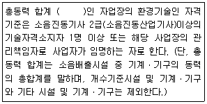
- 1,250kW 이상
- 2,250kW 이상
- 3,500kW 이상
- 3,750kW 이상
(정답률: 70%)
87. 소음진동관리법규상 공장의 배출허용기준에서 관련 시간대에 대한 측정소음 발생시간의 백분율 보정치로 옳지 않은 것은? (단, 관련시간대는 낮은 8시간, 저녁은 4시간, 밤은 2시간 기준이다.)
- 50% 이상 75% 미만 :+2dB
- 25% 이상 50% 미만 :+5dB
- 12.5% 이상 25% 미만 :+10dB
- 12.5% 미만 :+15dB
(정답률: 58%)
88. 소음진동관리법규상 특정공사의 사전신고 대상 기계ㆍ장비의 종류에 해당하지 않는 것은?
- 공기토출량이 분당 2.83세제곱미터 이상의 이동식 공기압축기
- 휴대용 브레이커
- 압쇄기
- 압입식 항타항발기
(정답률: 70%)
89. 다음은 환경정책기본법상 환경기준 설정에 관한 사항이다. ()안에 가장 적합한 것은?
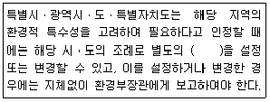
- 규제기준
- 지역환경기준
- 총량기준
- 배출허용기준
(정답률: 65%)
90. 소음진동관리법규상 생활소음ㆍ진동이 발생하는 공사로서 환경부령으로 정하는 특정공사를 시행하려는 자가 그 특정공사로 발생하는 소음ㆍ진동을 줄이기 위한 저감대책을 수립ㆍ시행하지 아니한 경우 과태료 부과기준은?
- 500만원 이하의 과태료를 과한다.
- 300만원 이하의 과태료를 과한다.
- 200만원 이하의 과태료를 과한다.
- 100만원 이하의 과태료를 과한다.
(정답률: 24%)
91. 소음진동관리법규상 시ㆍ도지사가 매년 환경부장관에게 제출하는 연차보고서에 포함되어야 할 내용으로 가장 거리가 먼 것은?
- 소음ㆍ진동 발생원 및 소음ㆍ진동현황
- 소음ㆍ진동 행정처분실적 및 점검계획
- 소음ㆍ진동 저감대책 추진실적 및 추진계획
- 소요 재원의 확보계획
(정답률: 72%)
92. 소음진동관리법규상 운행차 사용정치표지에 관한 사항으로 옳은 것은?
- 자동차의 전면유리창 오른쪽 하단에 붙인다.
- 바탕색은 검은색으로, 문자는 노란색으로 한다.
- 사용정지 자동차를 사용정지기간 중에 사용하는 경우 1년 이하의 징역 또는 1천만원 이하의 벌금에 처한다.
- 사용정지기간 중 주차장소도 기재되어야 한다.
(정답률: 72%)
93. 소음진동관리법규상 생활소음ㆍ진동과 관련하여 환경부령으로 정하는 특정공사의 사전신고를 한 자가 환경부령으로 정하는 중요한 사항을 변경하려면 시장 등에게 변경신고를 하여야 하는데, 이 “환경부령으로 정하는 중요한 사항”에 해당하지 않는 것은?
- 특정공사 기간의 연장
- 특정공사 사전신고 대상 기계ㆍ장비의 10퍼센트 이상의 증가
- 방음ㆍ방진시설의 설치명세 변경
- 공사 규모의 10퍼센트 이상 확대
(정답률: 80%)
94. 소음진동관리법규상 측정망 설치계획에 포함되어야 하는 고시사항으로 가장 거리가 먼 것은?
- 측정망의 설치시기
- 측정항목 및 기준
- 측정망의 배치도
- 측정장소를 설치할 토지나 건축물의 위치 및 면적
(정답률: 67%)
95. 환경정책기본법령상 관리지역 중 보전관리지역의 밤시간대의 소음 환경기준은? (단, 일반지역)
- 40Leq dB(A)
- 45Leq dB(A)
- 50Leq dB(A)
- 55Leq dB(A)
(정답률: 34%)
96. 소음진동관리법규상 배출시설의 설치허가를 받지 아니하고 배출시설을 설치한 자에 대한 법칙기준으로 옳은 것은?
- 1년 이하의 징역 또는 1천만원 이하의 벌금
- 2년 이하의 징역 또는 2천만원 이하의 벌금
- 3년 이하의 징역 또는 3천만원 이하의 벌금
- 5년 이하의 징역 또는 5천만원 이하의 벌금
(정답률: 59%)
97. 소음진동관리법규상 배출시설 및 방지시설 등과 관련된 행정처분기준 중 환경기술인을 임명해야 함에도 불구하고 임명하지 아니한 경우 1차 행정처분기준은?
- 허가취소
- 조업정지 5일
- 환경기술인 선임명령
- 경고
(정답률: 59%)
98. 소음진동관리법규상 진동배출시설(동력을 사용하는 시설 및 기계ㆍ기구로 한정한다.)기준으로 옳지 않은 것은?
- 15kW 이상의 프레스(유압식은 제외한다.)
- 15kW 이상의 단조기
- 22.5kW 이상의 목재가공기계
- 37.5kW 이상의 연탄제조용 윤전기
(정답률: 47%)
99. 소음진동관리법규상 배출시설 설치 시 허가를 받아야 하는 지역기준으로 옳은 것은?
- 의료법 규정에 의한 종합병원의 부지경계선으로부터 직선거리 100미터 이내의 지역
- 도서관법 규정에 의한 공공도서관의 부지경계선으로부터 직선거리 150미터 이내의 지역
- 고등교육법 규정에 의한 학교의 부지경계선으로부터 직선거리 150미터 이내의 지역
- 주택법 규정에 의한 공동주택의 부지경계선으로부터 직선거리 50미터 이내의 지역
(정답률: 54%)
100. 소음진동관리법규상 운행차 정기검사의 방법ㆍ기준으로 옳지 않은 것은?
- 경음기는 눈으로 확인하거나 3초 이상 작동시켜 경음기를 추가로 부착하였는지를 귀로 확인한다.
- 배기소음 측정은 자동차의 변속장치를 중립위치로 하고 정지가동상태에서 원동기의 최고 출력 시의 75% 회전속도로 4초 동안 운전하여 최대소음도를 측정한다.
- 경정소음은 자동차의 원동기를 가동시키지 아니한 정차상태에서 자동차의 경음기를 3초 동안 작동시켜 최대소음도를 측정한다.
- 측정치의 산출 시 소음 측정은 자동기록장치를 사용하는 것을 원칙으로 하고 배기소음의 경우 2회 이상 실시하여 측정치의 차이가 2dB을 초과하는 경우에는 측정치를 무효로 하고 다시 측정한다.
(정답률: 55%)
음압레벨 = 112dB - 20log(15/7)
= 112dB - 8.5dB
= 103.5dB
하지만, 이 문제에서는 면음원 기준으로 답을 구해야 한다. 면음원 기준에서는 거리가 두 배가 되면 음압레벨이 6dB 감소하므로, 15m 대신 30m으로 가정하고 계산해야 한다.
음압레벨 = 112dB - 20log(30/7)
= 112dB - 16.9dB
= 95.1dB
하지만, 이것도 아직 면음원 기준이 아니다. 벽면에서 3.5m 떨어진 곳에서 측정한 음압레벨을 빼줘야 한다.
면음원 기준 음압레벨 = 95.1dB - 112dB + 3dB
= 92.1dB
따라서, 가장 가까운 보기는 "92.8dB"이다. 이것은 계산에서 반올림한 결과이다.